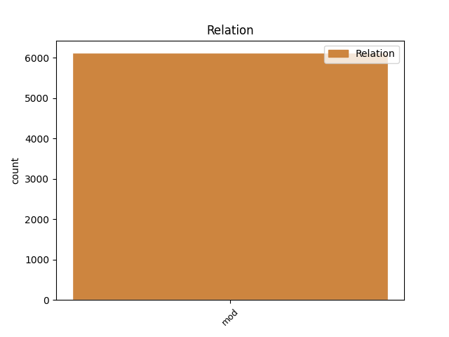
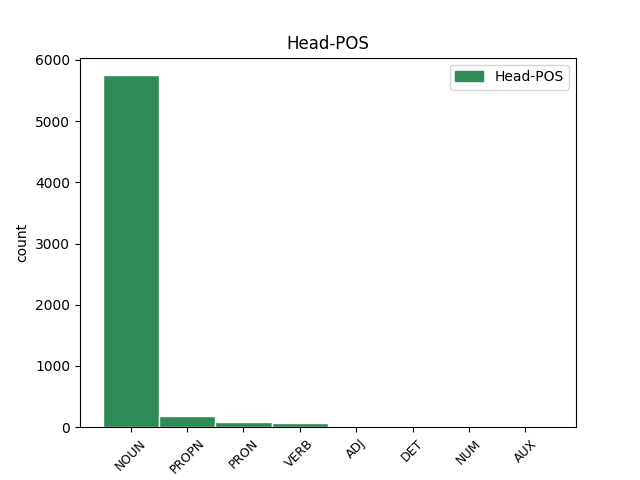
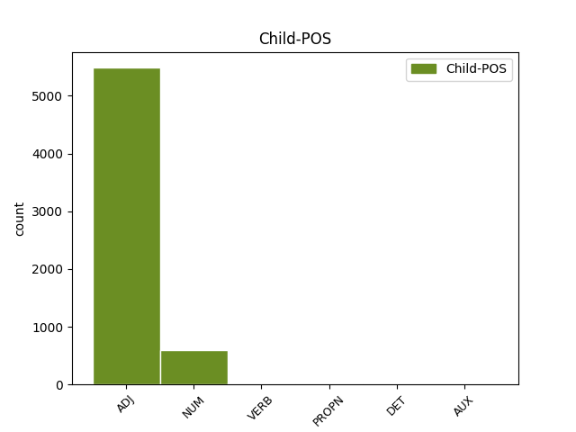

Distribution of features within this leaf



Agreement Rules sorted by frequency.
- When the dependent token is the modifer(mod) of the head token, and the dependent token is ADJ.
1 Żółty _ _ _ _ 0 _ _ _
2 krawat _ _ _ _ 0 _ _ _
3 tylko _ _ _ _ 0 _ _ _
4 mu _ _ _ _ 0 _ _ _
5 fruwa _ _ _ _ 0 _ _ _
6 na _ _ _ _ 0 _ _ _
7 wietrze _ _ _ _ 0 _ _ _
8 , _ _ _ _ 0 _ _ _
9 kurtka kurtka NOUN subst:sg:nom:f Case=Nom|Gender=Fem|Number=Sing 0 _ _ _
10 rozpięta rozpiąć ADJ ppas:sg:nom:f:perf:aff Aspect=Perf|Case=Nom|Gender=Fem|Number=Sing|Polarity=Pos|VerbForm=Part|Voice=Pass 9 mod _ SpaceAfter=No
11 . _ _ _ _ 0 _ _ _
1 Żeby _ _ _ _ 0 _ _ _
2 opłacić _ _ _ _ 0 _ _ _
3 dziennikarza _ _ _ _ 0 _ _ _
4 , _ _ _ _ 0 _ _ _
5 przeciętne _ _ _ _ 0 _ _ _
6 warszawskie _ _ _ _ 0 _ _ _
7 osiedle _ _ _ _ 0 _ _ _
8 musiało _ _ _ _ 0 _ _ _
9 by _ _ _ _ 0 _ _ _
10 się _ _ _ _ 0 _ _ _
11 złożyć _ _ _ _ 0 _ _ _
12 po _ _ _ _ 0 _ _ _
13 10 10 NUM num:pl:acc:m3:rec Case=Acc|Gender=Masc|Number=Plur|NumType=Card|SubGender=Masc3 14 mod _ DepType=Rec
14 groszy grosz NOUN subst:pl:gen:m3 Case=Gen|Gender=Masc|Number=Plur|SubGender=Masc3 0 _ _ _
15 . _ _ _ _ 0 _ _ _
1 W _ _ _ _ 0 _ _ _
2 chwilę _ _ _ _ 0 _ _ _
3 później _ _ _ _ 0 _ _ _
4 nadjechała _ _ _ _ 0 _ _ _
5 też _ _ _ _ 0 _ _ _
6 milicja milicja NOUN subst:sg:nom:f Case=Nom|Gender=Fem|Number=Sing 0 _ _ _
7 , _ _ _ _ 0 _ _ _
8 która _ _ _ _ 0 _ _ _
9 zajęła zająć VERB praet:sg:f:perf Aspect=Perf|Gender=Fem|Mood=Ind|Number=Sing|Tense=Past|VerbForm=Fin|Voice=Act 6 mod _ _
10 się _ _ _ _ 0 _ _ _
11 ustaleniem _ _ _ _ 0 _ _ _
12 przyczyn _ _ _ _ 0 _ _ _
13 wypadku _ _ _ _ 0 _ _ _
14 . _ _ _ _ 0 _ _ _
1 Na _ _ _ _ 0 _ _ _
2 reklamowanie reklamować NOUN ger:sg:acc:n:imperf:aff Aspect=Imp|Case=Acc|Gender=Neut|Number=Sing|Polarity=Pos|VerbForm=Vnoun 0 _ _ _
3 Heyah Heyah PROPN subst:sg:gen:n Case=Gen|Gender=Neut|Number=Sing 2 mod _ _
4 nie _ _ _ _ 0 _ _ _
5 ma _ _ _ _ 0 _ _ _
6 szans _ _ _ _ 0 _ _ _
7 . _ _ _ _ 0 _ _ _
1 Takiego taki DET adj:sg:gen:m1:pos Case=Gen|Gender=Masc|Number=Sing|PronType=Dem|SubGender=Masc1 2 mod _ _
2 go on PRON ppron3:sg:gen:m1:ter:nakc:npraep Case=Gen|Gender=Masc|Number=Sing|Person=3|PrepCase=Npr|PronType=Prs|SubGender=Masc1|Variant=Short 0 _ _ _
3 nigdy _ _ _ _ 0 _ _ _
4 nie _ _ _ _ 0 _ _ _
5 widział _ _ _ _ 0 _ _ _
6 em _ _ _ _ 0 _ _ _
7 . _ _ _ _ 0 _ _ _
1 Tam _ _ _ _ 0 _ _ _
2 , _ _ _ _ 0 _ _ _
3 gdzie _ _ _ _ 0 _ _ _
4 byli być AUX praet:pl:m1:imperf Aspect=Imp|Gender=Masc|Mood=Ind|Number=Plur|SubGender=Masc1|Tense=Past|VerbForm=Fin|Voice=Act 9 mod _ _
5 prześladowani _ _ _ _ 0 _ _ _
6 przez _ _ _ _ 0 _ _ _
7 muzułmanów _ _ _ _ 0 _ _ _
8 , _ _ _ _ 0 _ _ _
9 musiał musieć VERB praet:sg:m3:imperf Aspect=Imp|Gender=Masc|Mood=Ind|Number=Sing|SubGender=Masc3|Tense=Past|VerbForm=Fin|Voice=Act 0 _ _ _
10 wystarczyć _ _ _ _ 0 _ _ _
11 chaczkar _ _ _ _ 0 _ _ _
12 . _ _ _ _ 0 _ _ _
Disagree Examples:
1 Było być VERB praet:sg:n:imperf Aspect=Imp|Gender=Neut|Mood=Ind|Number=Sing|Tense=Past|VerbForm=Fin|Voice=Act 0 _ _ _
2 już _ _ _ _ 0 _ _ _
3 południe _ _ _ _ 0 _ _ _
4 , _ _ _ _ 0 _ _ _
5 kiedy _ _ _ _ 0 _ _ _
6 skończyli skończyć VERB praet:pl:m1:perf Aspect=Perf|Gender=Masc|Mood=Ind|Number=Plur|SubGender=Masc1|Tense=Past|VerbForm=Fin|Voice=Act 1 mod _ _
7 kręcić _ _ _ _ 0 _ _ _
8 . _ _ _ _ 0 _ _ _
1 Czynią _ _ _ _ 0 _ _ _
2 tak _ _ _ _ 0 _ _ _
3 wspomniani wspomnieć ADJ ppas:pl:nom:m1:perf:aff Aspect=Perf|Case=Nom|Gender=Masc|Number=Plur|Polarity=Pos|SubGender=Masc1|VerbForm=Part|Voice=Pass 4 mod _ _
4 starościna starościna NOUN subst:sg:nom:f Case=Nom|Gender=Fem|Number=Sing 0 _ _ _
5 i _ _ _ _ 0 _ _ _
6 starosta _ _ _ _ 0 _ _ _
7 . _ _ _ _ 0 _ _ _
1 Grożąc _ _ _ _ 0 _ _ _
2 skrzywdzeniem skrzywdzić NOUN ger:sg:inst:n:perf:aff Aspect=Perf|Case=Ins|Gender=Neut|Number=Sing|Polarity=Pos|VerbForm=Vnoun 0 _ _ _
3 Anety Aneta PROPN subst:sg:gen:f Case=Gen|Gender=Fem|Number=Sing 2 mod _ SpaceAfter=No
4 , _ _ _ _ 0 _ _ _
5 zabronili _ _ _ _ 0 _ _ _
6 też _ _ _ _ 0 _ _ _
7 powiadamiać _ _ _ _ 0 _ _ _
8 policję _ _ _ _ 0 _ _ _
9 . _ _ _ _ 0 _ _ _
1 Jak _ _ _ _ 0 _ _ _
2 podały podać VERB praet:pl:f:perf Aspect=Perf|Gender=Fem|Mood=Ind|Number=Plur|Tense=Past|VerbForm=Fin|Voice=Act 7 mod _ _
3 miejscowe _ _ _ _ 0 _ _ _
4 rozgłośnie _ _ _ _ 0 _ _ _
5 radiowe _ _ _ _ 0 _ _ _
6 , _ _ _ _ 0 _ _ _
7 wykoleiły wykoleić VERB praet:pl:m3:perf Aspect=Perf|Gender=Masc|Mood=Ind|Number=Plur|SubGender=Masc3|Tense=Past|VerbForm=Fin|Voice=Act 0 _ _ _
8 się _ _ _ _ 0 _ _ _
9 dwa _ _ _ _ 0 _ _ _
10 wagoniki _ _ _ _ 0 _ _ _
11 podziemnej _ _ _ _ 0 _ _ _
12 kolejki _ _ _ _ 0 _ _ _
13 . _ _ _ _ 0 _ _ _
1 Kiedy _ _ _ _ 0 _ _ _
2 Anna _ _ _ _ 0 _ _ _
3 Maria _ _ _ _ 0 _ _ _
4 poznała poznać VERB praet:sg:f:perf Aspect=Perf|Gender=Fem|Mood=Ind|Number=Sing|Tense=Past|VerbForm=Fin|Voice=Act 10 mod _ _
5 swojego _ _ _ _ 0 _ _ _
6 przyszłego _ _ _ _ 0 _ _ _
7 męża _ _ _ _ 0 _ _ _
8 , _ _ _ _ 0 _ _ _
9 niewiele _ _ _ _ 0 _ _ _
10 wiedział wiedzieć VERB praet:sg:m1:imperf Aspect=Imp|Gender=Masc|Mood=Ind|Number=Sing|SubGender=Masc1|Tense=Past|VerbForm=Fin|Voice=Act 0 _ _ _
11 o _ _ _ _ 0 _ _ _
12 Generale _ _ _ _ 0 _ _ _
13 . _ _ _ _ 0 _ _ _